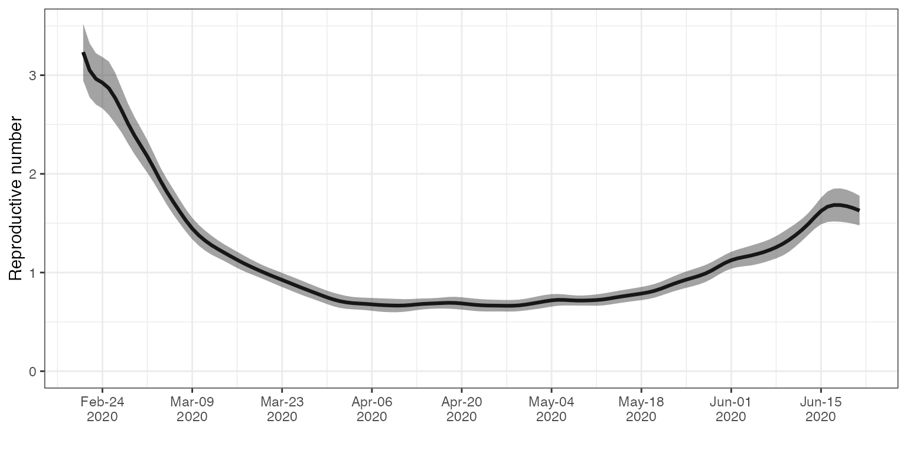

linelist_workflow_example.RmdIn this vignette, we demonstrate a workflow for estimating Re from a linelist.
library(estimateR)
# Data handling packages
library(dplyr)
#>
#> Attaching package: 'dplyr'
#> The following objects are masked from 'package:stats':
#>
#> filter, lag
#> The following objects are masked from 'package:base':
#>
#> intersect, setdiff, setequal, union
library(tidyr)
# Package for plotting
library(ggplot2)The example is a synthetic version of a linelist of COVID-19 cases. The aggregated incidence of this linelist corresponds to or closely matches the incidence of Swiss cases as reported by the Federal Office of Public Health. To keep the data handling fast and easy, we restricted the simulated data from February to June 2020. The data is stored in the CH_simulated_linelist variable.
# Simulated Swiss linelist
head(CH_simulated_linelist, n = 10)
#> # A tibble: 10 x 2
#> confirmation_date symptom_onset_date
#> <date> <date>
#> 1 2020-02-24 NA
#> 2 2020-02-25 NA
#> 3 2020-02-26 NA
#> 4 2020-02-26 2020-02-17
#> 5 2020-02-26 NA
#> 6 2020-02-26 NA
#> 7 2020-02-26 NA
#> 8 2020-02-26 NA
#> 9 2020-02-26 NA
#> 10 2020-02-26 NAWe transform the linelist into a dataframe that contains the daily incidence for case confirmations.
First, we construct the incidence of events of onset of symptoms for cases for which it is known.
onset_incidence <- CH_simulated_linelist %>%
transmute(date = symptom_onset_date) %>%
filter(!is.na(date)) %>%
group_by(date) %>%
tally(name = "onset_incidence")
head(onset_incidence)
#> # A tibble: 6 x 2
#> date onset_incidence
#> <date> <int>
#> 1 2020-02-17 2
#> 2 2020-02-18 1
#> 3 2020-02-19 1
#> 4 2020-02-20 3
#> 5 2020-02-21 4
#> 6 2020-02-22 2Then, we construct the incidence of events of case confirmation with no known symptom onset date.
confirmation_incidence <- CH_simulated_linelist %>%
# only keep report_date when we do not have the onset_date
mutate(confirmation_date = if_else(is.na(symptom_onset_date), confirmation_date, as.Date(NA))) %>%
transmute(date = confirmation_date) %>%
filter(!is.na(date)) %>%
group_by(date) %>%
tally(name = "confirmation_incidence")
head(confirmation_incidence)
#> # A tibble: 6 x 2
#> date confirmation_incidence
#> <date> <int>
#> 1 2020-02-24 1
#> 2 2020-02-25 1
#> 3 2020-02-26 9
#> 4 2020-02-27 8
#> 5 2020-02-28 6
#> 6 2020-02-29 8Now let us merge the two into a single dataframe. We need to make sure we align the two incidence vectors, and fill the missing dates with zero values.
CH_incidence_data <- full_join(onset_incidence, confirmation_incidence, by = 'date') %>%
replace_na(list(onset_incidence = 0, confirmation_incidence = 0)) %>%
complete(date = seq.Date(min(date), # add zeroes for dates with no reported case
max(date),
by = "days"),
fill = list(onset_incidence = 0,
confirmation_incidence = 0)) %>%
select(date, onset_incidence, confirmation_incidence) %>%
arrange(date)
head(CH_incidence_data)
#> # A tibble: 6 x 3
#> date onset_incidence confirmation_incidence
#> <date> <dbl> <dbl>
#> 1 2020-02-17 2 0
#> 2 2020-02-18 1 0
#> 3 2020-02-19 1 0
#> 4 2020-02-20 3 0
#> 5 2020-02-21 4 0
#> 6 2020-02-22 2 0As a second step, we make use of the linelist to inform the analysis on the distribution of the delay between onset of symptom and case confirmation.
CH_delay_data <- CH_simulated_linelist %>%
filter(!is.na(symptom_onset_date), !is.na(confirmation_date)) %>%
transmute(event_date = symptom_onset_date,
report_date = confirmation_date) %>%
mutate(report_delay = as.integer(report_date - event_date)) %>%
mutate(report_delay = if_else(report_delay < 0, as.integer(NA), report_delay)) %>% # curate negative delays
filter(!is.na(report_delay)) %>% # remove NA values
select(-report_date) %>% # rearrange dataset
arrange(event_date)
head(CH_delay_data)
#> # A tibble: 6 x 2
#> event_date report_delay
#> <date> <int>
#> 1 2020-02-17 9
#> 2 2020-02-17 14
#> 3 2020-02-18 17
#> 4 2020-02-19 21
#> 5 2020-02-20 8
#> 6 2020-02-20 9Additionally, we need to specify the incubation period for COVID-19 (TODO add ref) and the serial interval (TODO add ref).
## Delay between infection and onset of symptoms (incubation period) in days
# Gamma distribution parameter
shape_incubation <- 3.2
scale_incubation <- 1.3
# Incubation period delay distribution
distribution_incubation <- list(name = "gamma",
shape = shape_incubation,
scale = scale_incubation)
# Serial interval (for Re estimation) in days
mean_serial_interval <- 4.8
std_serial_interval <- 2.3Now, we set some parameter of the analysis:
estimation_window = 3 # 3-day sliding window for the Re estimation
minimum_cumul_incidence = 100 # we start estimating Re after at least 100 cases have been recorded
N_bootstrap_replicates = 100 # we take 100 replicates in the bootstrapping procedure
# We specifiy the reference date (first date of data) and the time step of data.
ref_date = min(CH_incidence_data$date)
time_step = "day"We can then perform the Re estimation. The computation should take a few seconds to complete.
CH_estimates <- get_bootstrapped_estimates_from_combined_observations(
partially_delayed_incidence = CH_incidence_data$onset_incidence,
fully_delayed_incidence = CH_incidence_data$confirmation_incidence,
N_bootstrap_replicates = N_bootstrap_replicates,
delay_until_partial = distribution_incubation,
delay_until_final_report = CH_delay_data,
partial_observation_requires_full_observation = TRUE,
combine_bootstrap_and_estimation_uncertainties = TRUE,
estimation_window = estimation_window,
minimum_cumul_incidence = minimum_cumul_incidence,
mean_serial_interval = mean_serial_interval,
std_serial_interval = std_serial_interval,
ref_date = ref_date,
time_step = time_step
)
head(CH_estimates)
#> # A tibble: 6 x 4
#> date Re_estimate CI_down_Re_estimate CI_up_Re_estimate
#> <date> <dbl> <dbl> <dbl>
#> 1 2020-02-21 3.05 2.35 3.74
#> 2 2020-02-22 2.53 1.20 3.86
#> 3 2020-02-23 2.28 1.59 2.98
#> 4 2020-02-24 2.33 1.91 2.75
#> 5 2020-02-25 2.63 0.748 4.51
#> 6 2020-02-26 3.00 1.64 4.36
ggplot(CH_estimates, aes(x = date, y = Re_estimate)) +
geom_line(lwd= 1.1) +
geom_ribbon(aes(x = date, ymax = CI_up_Re_estimate, ymin = CI_down_Re_estimate), alpha = 0.45, colour = NA) +
scale_x_date(date_breaks = "2 weeks",
date_labels = '%b-%d\n%Y') +
ylab("Reproductive number") +
coord_cartesian(ylim = c(0, 3.5)) +
xlab("") +
theme_bw() TODO Summary